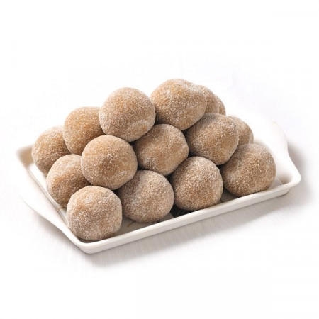
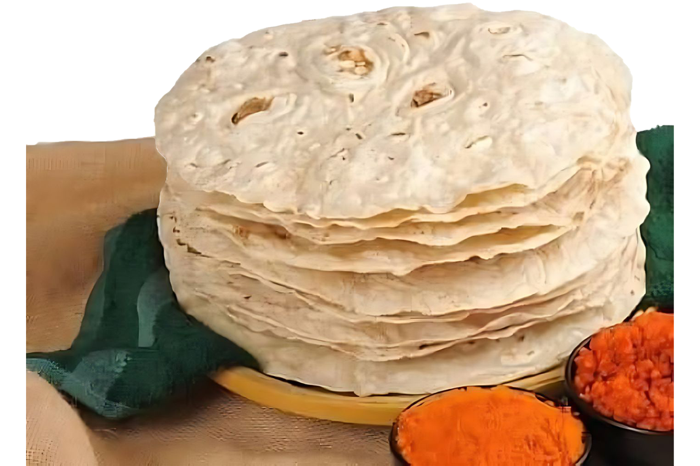
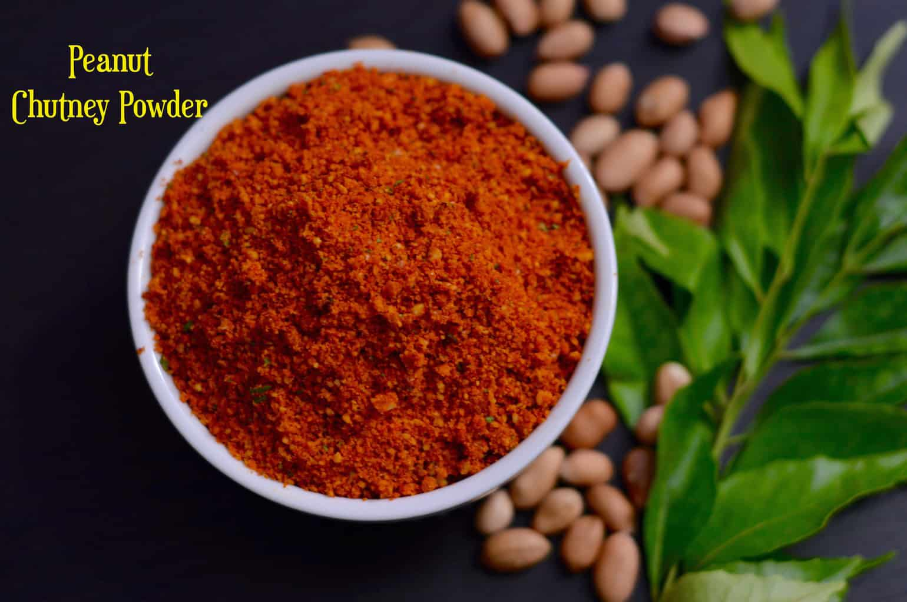
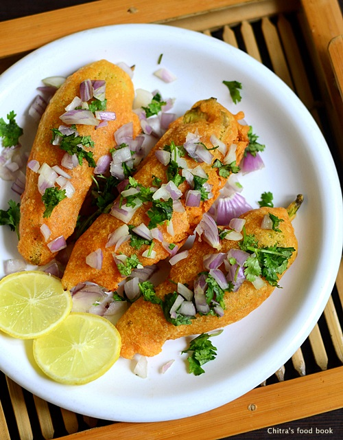

CUISINE OF HUBBALLI-DHARWAD

DHARWAD PEDA
ICONIC SWEET: THE DHARWAD PEDA IS ONE OF THE MOST FAMOUS SWEETS IN INDIA, MADE FROM MILK, SUGAR, AND KHOVA. IT HAS A RICH, CARAMELIZED FLAVOR AND A SLIGHTLY CRUMBLY TEXTURE.

JOLADA ROTTI
STAPLE FOOD: JOLADA ROTTI, OR FLATBREAD MADE FROM SORGHUM FLOUR, IS A STAPLE IN HUBBALLI-DHARWAD, ESPECIALLY IN NORTH KARNATAKA.

SHENGA CHUTNEY
DRY CHUTNEY: THIS DRY, SPICY PEANUT CHUTNEY IS A POPULAR ACCOMPANIMENT TO JOLADA ROTTI OR RICE. IT IS MADE BY GRINDING ROASTED PEANUTS, RED CHILIES, GARLIC, AND SPICES.

MIRCHI BHAJJI
SPICY FRITTERS: THESE ARE DEEP-FRIED, SPICY CHILI FRITTERS THAT ARE CRISPY ON THE OUTSIDE AND SOFT INSIDE. IT IS A POPULAR STREET SNACK, ESPECIALLY ENJOYED DURING THE RAINY SEASON.